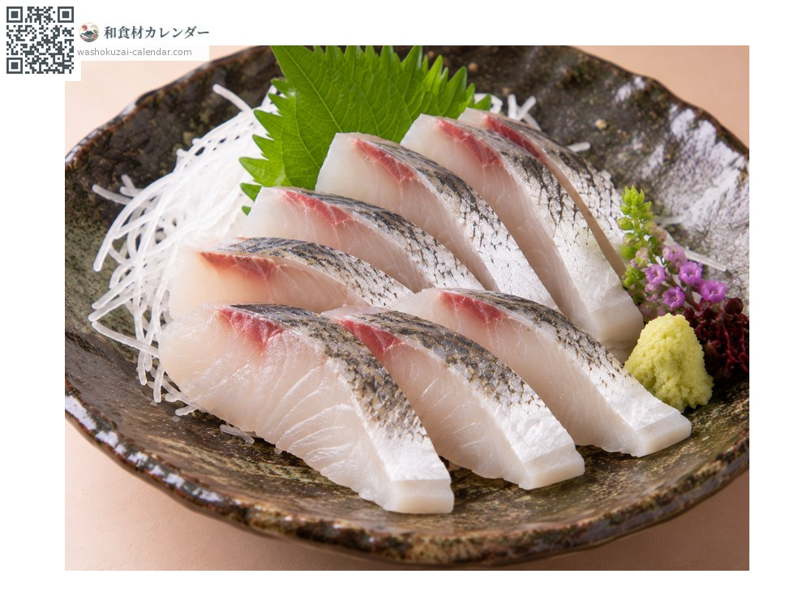
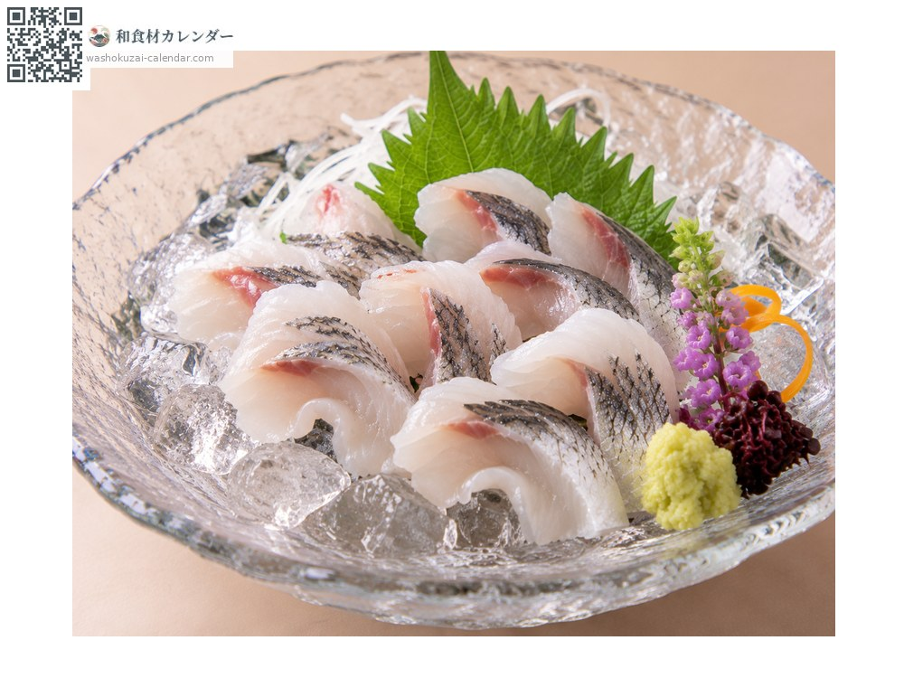
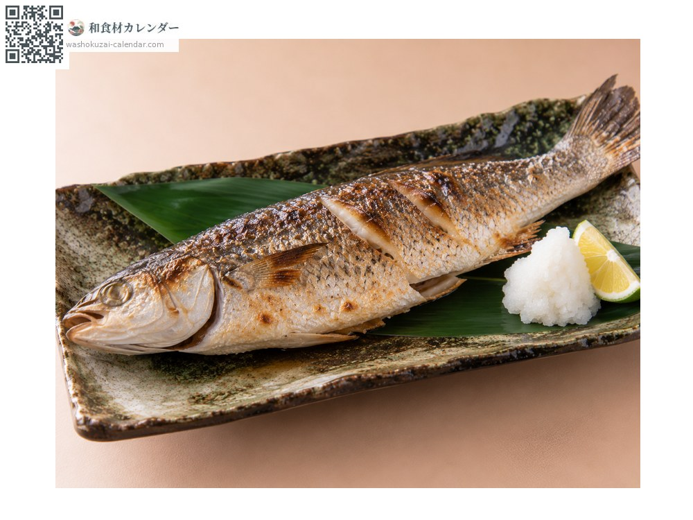
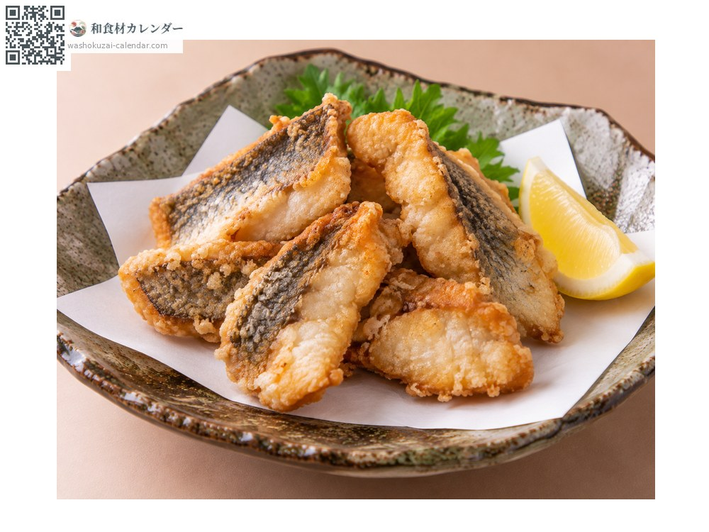

魚介
ボラ
ぼら
旬は1月・2月・11月・12月

旬の時期
1月
2月
3月
4月
5月
6月
7月
8月
9月
10月
11月
12月
旬出回り
調理法

刺身
寒ボラは臭みがなく、もちりとした歯ごたえ。

洗い
氷水で締める。身が引き締まり食感が立つ。

塩焼き
丸ごと焼く。皮目が香ばしい。

唐揚げ
切り身を揚げる。淡白な身に衣が合う。
選び方
体に張りがあり、目が澄んでいるもの。水の綺麗な海域で獲れたもの。
保存方法
内臓を取って冷蔵し、2日以内に使い切る。
主な産地
豆知識
オボコ、イナ、ボラ、トドと名を変える出世魚で、「とどのつまり」の語源とされる。卵巣を塩漬けにして干したものが「からすみ」で、長崎の名産として珍重される。冬の寒ボラは臭みがなく美味とされる。